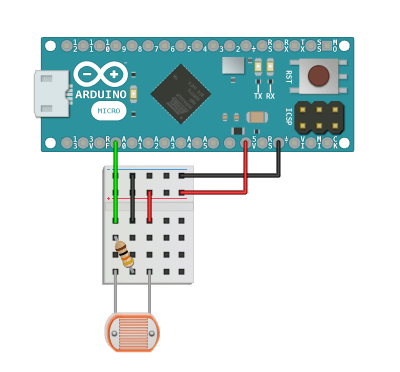

Read and calibrate photoresistors.v1.0.3
How to Install See Example Public MethodsRead and calibrate photoresistors.
This library is part of a larger package that you can install to access all of the documented sensors, or you can use this library by itself.

Create a new sensor and pass in the Arduino pin number.
Provide an integer from 0 - 1023 to calibrate the sensor with a lower bounds of light detection. This will adjust the scale for all methods that return a value in this library, but will not adjust their documented output range. Calibrate the floor with help from getRawValue().
Provide an integer from 0 - 1023 to calibrate the sensor with an upper bounds of light detection. This will adjust the scale for all methods that return a value in this library, but will not adjust their documented output range. Calibrate the ceiling with help from getRawValue().
Change the setFloor() value back to 0, which also resets the lower bounds of the scale for all methods that return a value in this library.
Change the setCeiling() value back to 1023, which also resets the upper bounds of the scale for all methods that return a value in this library.
Returns an integer from 0 - 1023 for the current light level adjusted for the setFloor() and setCeiling() values. If the floor or ceiling are not set, this method will return getRawValue().
Returns an integer from 0 - 1023 for the current light level reading from the sensor. Use this method to calibrate setFloor() and setCeiling().
Returns an integer from 1023 - 0 for the opposite of the current light level.
Returns an integer from 0 - 100 for the current light percentage.
Returns an integer from 100 - 0 for the opposite of the current light percentage.